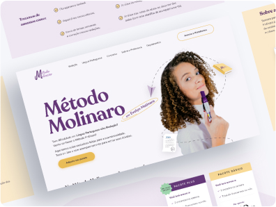
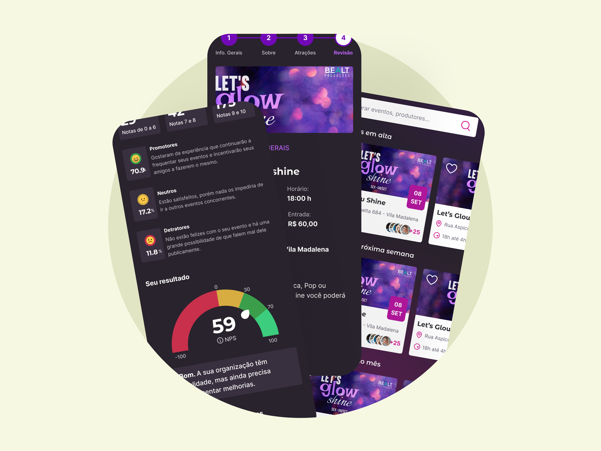
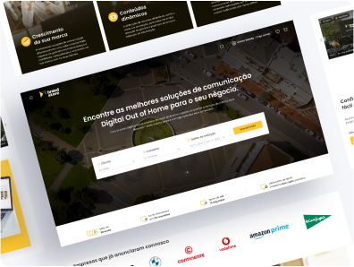

+1
ANO DE EXPERIÊNCIA
projetos recentes


Projeto Método Molinaro
Co-responsável por projetar uma landing page para uma plataforma educacional em ascensão. Foram utilizadas pesquisas de usuário, prototipação no Figma gerando um aumento significativo nas receitas da plataforma.
Ver projeto

Projeto App Hangover
Co-responsável por projetar uma plataforma de eventos sociais para a Hangover onde utilizamos o Figma para a prototipação, pesquisa com o usuário e análise de concorrentes.
Ver projeto

Projeto BrandStore
Co-responsável pela elaboração de uma plataforma de vendas e aluguéis de Ecrãs. Utilizamos o Figma como ferramenta de prototipação e pesquisas de usuário para avaliar a satisfação e efetividade do UI e UX.
Ver projeto